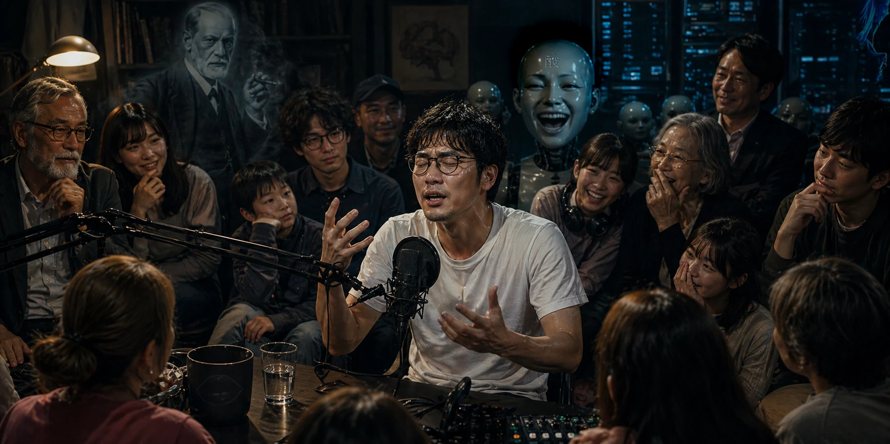

[with audio] #124
【音声配信】👩💻AI環境作って，🔤英語学習して，🛒スーパー行ったら小学生になってた😳【第29回】
テーマ: 🧪🧠ローカルAI構築，🇬🇧🗣️発音をお勉強（おシスティといっしょ），👩👧母娘とノスタルジア（疎密波），etc…｜
時間: 約 130 分｜
料金: 無償（サイト共通）

※上記画像は生成AI（OpenAI社のChatGPT）によって作成された素材を用いて，ホモ・サピエンス（システィ）の手によって完成されました．
※なんと画像にはギミックが潜んでいます！（ヒント：映像作品[!sensitive!]「愛、おやすみ。」から2名の出演／クチビリティ（くちびるイマージュ）／漢語一字）拡大してじっくり観察してみよう！＾＾
メニュー
紹介文
いぢわるネターミィ and はづかしソネーミィ（均質性こそが全て）
今回も生成AIによる整った紹介文を掲載してしまいます！（部分的に人為的エディットあり．またしてもホモ・サピエンスの一個体が暗躍します．）
ローカルAI構築術から、発音トレーニング、そしてスーパーで聞いた妙に小学生的なセリフまで——
Chat GPT (人為編集済．)
このエピソードは、一見バラバラな3つのテーマを「五感」と「思考（※歯垢ではない！）」で強引に接続する実験的Podcastです。
🏷 前半 では、「自分のパソコンの中で動くAI」をテーマに、Llamaを中心としたLLMの基礎から、完全ローカル環境でAIを構築する方法までを酸っぱく解説。
ハードウェア要件、量子化モデルの選択、そしてCPU内蔵GPU環境でどこまで戦えるのか——
専門的な話題を扱いつつも、「なぜそれが今重要なのか」に焦点を当てます。
さらに、論文 "Attention Is All You Need" (Vaswani et al., 2017) がなぜ革命だったのかを、時に脱線しながら紐解いていきます。
🏷 中盤 では一転、リスナー参加型の英語発音セッションへ。少したどたどしい英語で、
どこか格好をつけながらも真剣に発音に挑戦していきます。
うまくいっているのか微妙なラインを行き来しつつ、気づけばなぜか一緒に笑ってしまう——
そんな、不器用さごと共有する時間です。
🏷 後半 は、スーパーという日常空間を舞台にした雑談パート。
小学生の頃によく聞いた「あの」サウンドが耳に訪れます。
ただし、この番組は単なる娯楽では終わりません。AIの進化がもたらす倫理的課題や、日本のインフラが旧来システムに依存している現状に対するリスクなど、国家レベルの安全性にも言及していきます。
そして本番組の底流にあるのは、より根本的な対比です。
AIは可逆的な計算機です。理論上、何度でもやり直しがきき、最適解へと収束していく存在。一方で人間は、不可逆的な存在です。選択は巻き戻せず、時間は一方向にしか流れない。
AIは後悔しません。しかし人間は後悔する存在です。
そしてその後悔こそが、判断を歪め、非合理な選択を生み、時に損失を過剰に恐れさせる。けれど同時に、それは記憶となり、物語となり、次の選択に重みを与える。
ノイズに満ちた判断、説明のつかない感情、消えない心の傷——それらは最適化の観点から見れば「誤差」に過ぎないはずのものです。
しかし、その誤差こそが、経験に厚みを与え、意味を生成しているのではないか。
すべてをやり直せる世界では、選択は軽くなる。
不可逆であるからこそ、人は迷い、傷つき、そして価値を見出す。
AIが最適化を極めていく時代において、人間は何を手放し、何を残すのか。
この番組は、その問いを、笑いと雑談の中に紛れ込ませながら静かに追いかけていきます。
軽妙でありながら鋭い。ケイオスでありながら一貫している。
そしてたぶん、わりと真面目な顔をして、そこそこふざけています。
それでもなお聞くなら——
あなた自身の「非合理」を、ちょびっと持ち込んでしまってくださいね。
※AI出力テキストである性質上，実際の内容との整合性にズレが生じている可能性がございます．ご了承ください．
ファイル
▶ Part.a (1/3): "【音声配信】👩💻AI環境作って，🔤英語学習して，🛒スーパー行ったら小学生になってた😳【第29回】" Part.a" Talk Audio（Date of website launch: Apr 25, 2026.）
▶ Part.b (2/3): "【音声配信】👩💻AI環境作って，🔤英語学習して，🛒スーパー行ったら小学生になってた😳【第29回】" Part.b" Talk Audio（Date of website launch: Apr 26, 2026.）
▶ Part.c (3/3): "【音声配信】👩💻AI環境作って，🔤英語学習して，🛒スーパー行ったら小学生になってた😳【第29回】" Part.c" Talk Audio（Date of website launch: Apr 26, 2026.）
音源: 192kbps mp3（中高音質）; 参照先: Google Drive オンラインストレージ
ファイル及びデータについての詳細表示
録音者情報: "Sys. T. Miyatake (Date of recording: Apr 23, 2026.)"
ファイルに関する説明とお願い:
Google LLC https://www.google.com/ のクラウドストレージサービス，Google Drive に保存されているファイルを参照しています．
サイトにお越しの皆さまに鑑賞いただくことを目的として，誰でも再生可能な状態に設定してあります．
当サイト利用者さまがオンラインサーバ上でファイルを再生してお楽しみいただく以外の，たとえばローカルへの保存などの行為はお控えくださいますよう，お願い申し上げます．
ドライブにアップロードする理由:
ファイルサイズが大きいため．
ノート（PDF付）
PDF「あなたのPCで動くAIから、GPTの設計思想まで」
📑 あなたのPCで動くAIから、GPTの設計思想まで（Google Drive参照）
- 編集者: Sys.T.Miyatake, 2026
- 活用ツール: 生成AI (ChatGPT, Claude)
ご注意: リンク先資料に記載された内容のご利用にあたっては，特にコマンドライン等のコード実行を含め，利用者ご自身の責任においてご判断ください．
これらの実行により生じたいかなる結果についても，当方では責任を負いかねますので，あらかじめご了承くださいますようお願い申し上げます．
お詫びと訂正 (Apr 28, 2026)
■ 正しくは四字熟語でも "絶体絶命"
当エピソード内において，「好きな漫画作品のタイトルでは四字熟語とは異なって絶体絶命と表記され……」との旨を発言いたしましたが，正しくは「四字熟語と同様に絶体絶命と表記され……」の誤りでした．
なお，「絶体」「絶命」ともに九星占い（古代中国から伝わる民間信仰）でいう凶星の名称由来の語のようです．
ここに訂正し，お詫び申し上げます．
リスナーのみなさんへ
この番組では，フィードバックをお待ちしております！
貴重なご意見・ご感想・ご希望などをお聴かせくださると，ありがたいのです！ご協力いただける方は是非 筆者宛にご連絡 お願いいたします...！
以上になります．今回もご清聴ありがとうございました！
[ Sys. T. Miyatake, (Apr 25, 2026. Last modified: Apr 28, 2026.;) ]